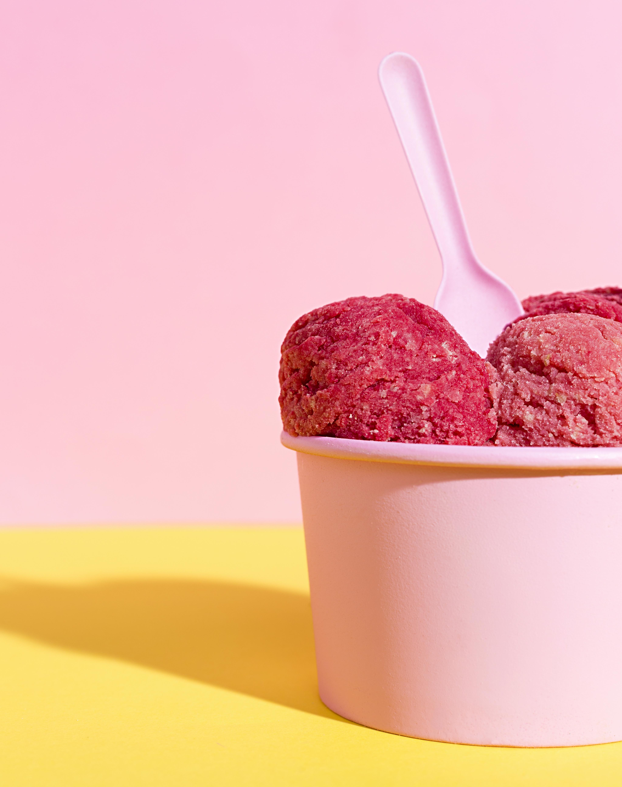

Himbeereis

Beschreibung
Willst Du schnell und unkompliziert ein leckeres Himbeereis zubereiten, das noch dazu ohne zugesetzten Zucker auskommt?
Dann bist du hier richtig!
Zutaten für 4 Portionen
- 1 Packung gefrorene Himbeeren
- 1 Becher Sahne
- optional: 2-3 Löffel Naturjoghurt
Zubereitung
- Setze das Universalmesser in die große Schüssel der MagiMix ein und gib die gefrorenen Himbeeren hinein.
Optional kannst Du jetzt auch den Joghurt dazu geben, wenn Du es etwas frischer und leichter magst.
- Deckel der MagiMix schließen und die PULSE-Taste einige Male drücken, bis die Himbeeren etwas zerkleinert sind.
- Schalte die MagiMix nun in den AUTO-Modus und füge die Sahne langsam von oben in die Maschine, bis die Masse die
gewünschte Konsistenz hat. Dann sofort auf STOP, damit die Masse nicht zu weich wird.
- Das fertige Eis mit einem Löffel portionieren und mit frischen Himbeeren und Minze garnieren.
Guten Appetit!
Zurück zu all meinen Lieblingsrezepten